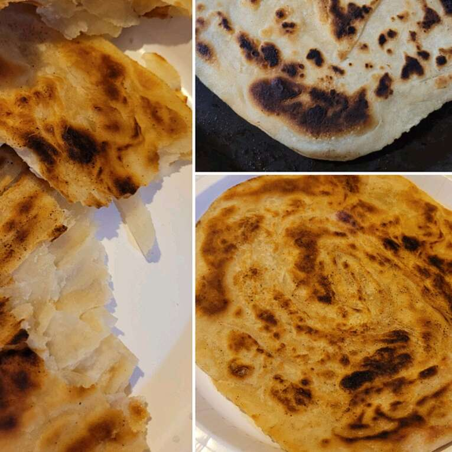

Paratha

Description
Breakfast, lunch, tea time, and dinner - this popular Indian pancake is available for a meal or snack. As kids we ate it sprinkled with sugar. It's typically served with curry and sambal if you choose to spice it up.
Ingredients
- ¾ cup warm water
- 1 teaspoon salt
- 1 pinch white sugar
- 4 ¾ cups all-purpose flour
- 3 ½ tablespoons clarified butter (ghee)
- 1 egg
- 1 teaspoon water
- 2 tablespoons ghee (clarified butter), divided
Directions
- Mix warm water, salt, and sugar together in a bowl. Put flour in a large mixing bowl; work in 3 1/2 tablespoons ghee using your fingertips.
- Beat egg and 1 teaspoon water together in a bowl; add to flour mixture. Gradually mix warm water mixture into flour mixture while kneading until dough becomes soft and pliable. Form dough into balls and let rest in a well-oiled bowl, 2 to 3 hours.
- Working on a flat greased surface, take a dough ball and flatten it using the heel of your palm to make a paper-thin circle. Spread 1 teaspoon ghee inside it. Fold the edges together to make roti into a square. Repeat with remaining dough.
- Heat about 1 tablespoon ghee on griddle or in a skillet over medium heat; cook roti until browned, 1 to 3 minutes per side.